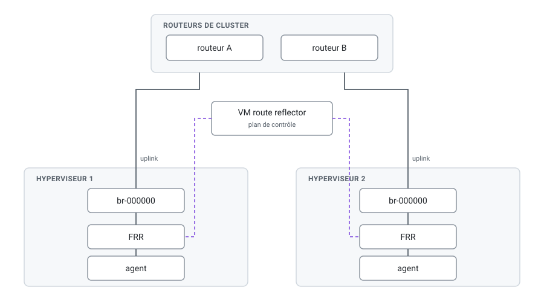
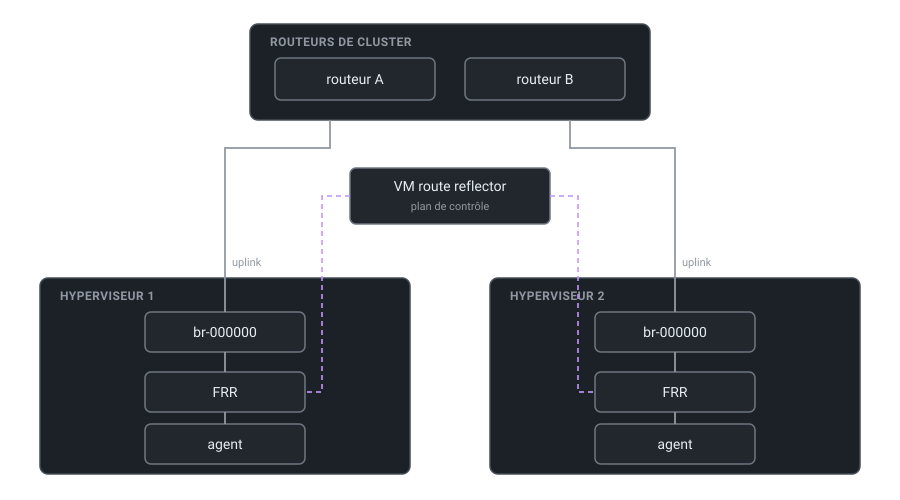

Architecture du cluster#
Topologie#
{kind=link}

Topologie cible. Trait plein : plan de données. Trait pointillé : plan de contrôle.#
{kind=link}

Topologie cible. Trait plein : plan de données. Trait pointillé : plan de contrôle.#
Deux plans distincts, à ne pas confondre au moment du diagnostic :
- Plan de données
les tunnels VXLAN entre hyperviseurs, encapsulés sur le réseau qui les relie.
- Plan de contrôle
ce qui dit à chaque hyperviseur où se trouvent les adresses MAC des autres. C’est le rôle de FRR et du route reflector.
Ce que l’agent suppose déjà en place#
L’agent ne configure que son propre hyperviseur, et seulement à partir du bridge d’uplink. Tout ce qui est en amont — adressage des hyperviseurs, routage entre eux, plan de contrôle — lui préexiste et n’est jamais créé ni vérifié par lui.
Concrètement, il attend :
le bridge d’uplink de la configuration (
br-000000par défaut), avec l’interface physique esclave et l’adresse de l’hyperviseur portée par le bridge — c’est ce que faitdeploy.sh --bootstrap, voir Installation d’un hyperviseur ;une connectivité IP entre hyperviseurs sur cette adresse, port UDP 4789 ouvert dans les deux sens ;
un plan de contrôle qui peuple la table de transfert VXLAN — voir ci-dessous.
Pourquoi un plan de contrôle est nécessaire#
L’agent crée les interfaces VXLAN sur le port 4789 sans groupe multicast et avec
l’apprentissage désactivé (Learning: false). Il n’y a donc ni inondation multicast, ni
apprentissage des adresses MAC depuis le trafic, ni voisin statique configuré.
Important
Conséquence directe : sur un même VNI, rien ne traverse d’un hyperviseur à l’autre tant qu’un composant externe n’a pas peuplé la table de transfert (FDB) du VXLAN. Sur un nœud isolé le trafic reste sur le bridge local et cette absence ne se voit pas ; elle apparaît dès le deuxième nœud.
C’est exactement le rôle que remplissent FRR sur chaque hyperviseur et le route reflector qui les fait converger.
MTU#
Avertissement
L’agent crée bridges, veth et interfaces VXLAN avec un MTU figé à 1500. VXLAN ajoute 50 octets d’encapsulation : le réseau qui relie les hyperviseurs doit donc accepter au moins 1550 octets de MTU, sinon les paquets pleine taille des VM sont perdus.
Le symptôme est trompeur : le ping passe, les petites requêtes passent, les transferts volumineux et les poignées de main TLS échouent.
Hyperviseurs sans état#
L’hyperviseur est stateless — sa racine est en tmpfs, rien de ce que pose
deploy.sh --bootstrap ne survit à un redémarrage, et le script est rejoué à chaque démarrage.
Toute configuration ajoutée à un hyperviseur — FRR compris — doit donc être posée par un
mécanisme rejouable au démarrage, jamais par une modification manuelle d’un fichier sous
/etc.
Adressage#
Note
À rédiger — cette page ne décrit pas encore le plan d’adressage du cluster. À documenter :
la plage utilisée pour les adresses d’hyperviseurs, et son rapport avec
br-000000;l’allocation des VNI VXLAN : qui la tient, et comment on évite les collisions, puisque l’agent ne valide pas
vxlan_id;l’usage prévu de
br-public, créé vide et réservé par le bootstrap ;le plan d’adressage des VPC, et ce qui garantit qu’ils ne se recouvrent pas entre clients.